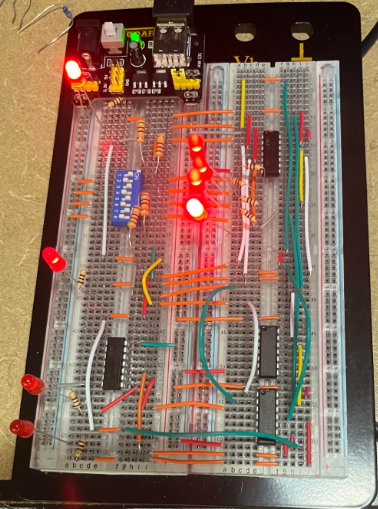
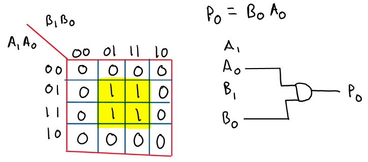
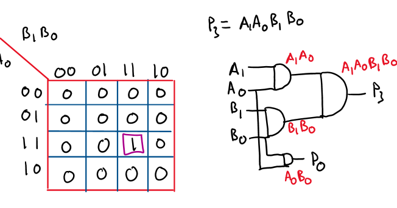
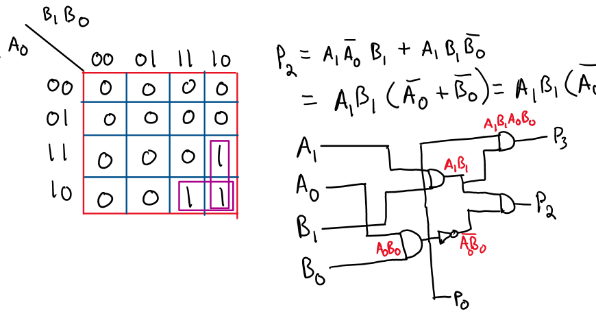
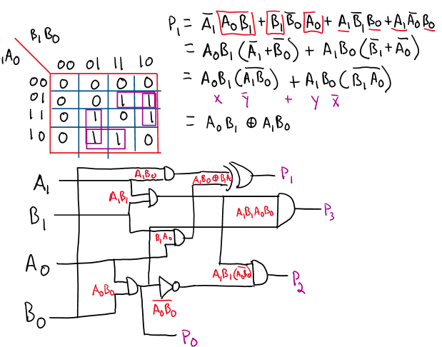
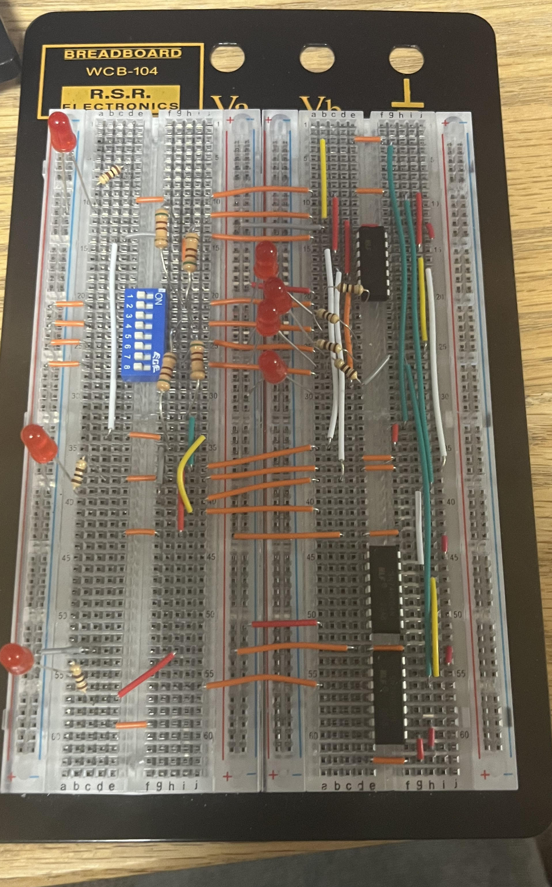
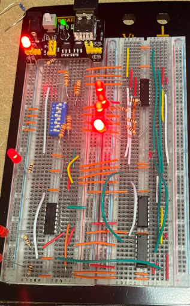

2-Bit Multiplier
A combinational logic circuit that multiplies two 2-bit binary numbers and displays the 4-bit product on LEDs. Built entirely from discrete logic gates — no adders, no ICs doing the arithmetic for you — so every output bit comes from a Boolean expression I derived and minimized by hand.

Planning
I started with a truth table covering all sixteen input combinations, then wrote a Karnaugh map for each of the four output bits and reduced each to its minimal sum-of-products expression. Several of those expressions shared common terms, so I combined them rather than implementing each independently, which cut the gate count substantially.




Building
The optimization paid off in parts: the final circuit uses four chips — two AND gates, one XOR, and one NOT — instead of the larger set a naive implementation would have needed. Fewer chips also meant a much cleaner breadboard layout.
I built and tested one output branch at a time rather than wiring the whole thing and debugging at the end. Verifying each branch against the truth table before moving to the next kept faults local to whatever I'd just added.


- Discrete logic
- Karnaugh maps
- Boolean minimization
- breadboarding